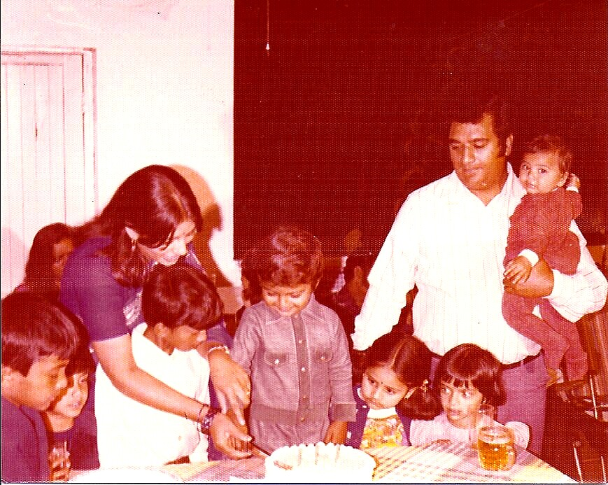

The Journey
About
I'm Nitin Solanki — advisor, investor, and the founder of Solanki Co. Over 25 years, I've helped leaders create clarity in complex environments and translate strategy into disciplined execution. Today, that work lives under a platform I built to carry it forward.
Origins
Early Life: Zambia to America
I was born in Luanshya, Zambia. My early childhood there was stable and meaningful—we didn't leave out of hardship. My family moved to the United States when I was 10 because they were thinking long-term: education, opportunity, and a bigger future.
Some of my most formative lessons came through my father's work. I was six or seven when I started spending time in his shop, working alongside him while most kids my age were still learning to hold a simple conversation. I was interacting with customers directly—listening to their concerns, watching how he solved problems, seeing how respect and attention translated into lasting relationships. Those early years taught me something that took others decades to learn: people respond when you actually listen. Trust isn't granted—it's earned through consistency, clarity, and genuine interest in solving their problem, not yours. I learned to communicate clearly under pressure, to respect people's time, to handle objections without defensiveness, and to treat every interaction as the foundation of something larger. It wasn't called "business acumen" then, but that's exactly what it was—and it never left me.
The transition wasn't smooth. I arrived speaking broken English and landed in Millen, Georgia — a small town where I was the only Indian kid in school. The other students were either white or Black, and I was the odd one out. I wore clothes from Family Dollar because my parents couldn't afford anything else. By 8th grade graduation, the top students were recognized on stage — and I was in the back, watching. I knew I wasn't there yet. But I also knew I could be.

Foundation
Growing Up in the U.S.: The Motel Business
In the U.S., those same lessons continued through the motel business. If you want a real-world education in people and problem-solving, spend time in hospitality. There is no perfect day in hospitality. There is always a guest. Always a need. Always an issue. You learn fast or you fail. That environment trains you to manage emotions—yours and others—to stay composed when everything is moving at once, to communicate with clarity even when exhausted, and to solve problems without performance or panic.
That's where composure under pressure stopped being a skill and became instinct. I learned that you don't earn credibility through charisma or effort—you earn it through reliability. When guests remembered us, it wasn't because we promised them the world. It was because we showed up consistently, kept our word, and handled their problems with dignity. Those habits became embedded in how I operate and lead to this day.
Early Career
Banking and Structure
After high school, I worked at a bank as a drive-through teller. It taught me what it means to represent an institution: consistency, reliability, process discipline, and delivering service at a high standard—every day, not just when it's convenient. Banking also taught me something critical that resonates through everything I've done since: being good with people isn't enough. You need discipline at scale. You need systems that work whether you're there or not. You need reliability that doesn't depend on mood or circumstances. Those principles—trustworthiness, discipline, structure—are what allow anything to survive and grow beyond personality.
Professional Growth
College to Consulting
As I transitioned from college into the professional world, consulting immediately made sense for my personality and strengths. Consulting is a people business. Yes, it involves technology, process, and strategy—but at its core, it's about earning trust quickly, understanding what a client truly needs (often before they can articulate it), aligning stakeholders with competing priorities, navigating ambiguity, and delivering outcomes under real pressure.
I couldn't get into Georgia Tech out of high school — my standardized test scores were in the bottom percentile. So I found another way. I enrolled at Georgia Southern University, took morning classes, then drove home to work the afternoon shift at a local bank for $4.25 an hour. I studied at night. After three years of that, I earned my way into Georgia Tech's engineering transfer program. My SAT score didn't matter anymore — my GPA did.
But the true proving ground before consulting was Georgia Tech. I studied Electrical Engineering in an environment where expectations were high and the competition was unforgiving. You can't bluff your way through electrical engineering at Georgia Tech. You either do the work or you get exposed. The pace was relentless. You were surrounded by some of the smartest students in the room—people who could solve complex problems quickly, think analytically, and perform at a high level consistently. Georgia Tech didn't permit shortcuts. You couldn't coast, you couldn't fake it, and you couldn't rely on talent alone. If it was hard, good—that was the training. You had to develop work ethic, resilience, and the ability to push through hard problems until you reached clarity. That experience didn't just sharpen my technical foundation—it built the mental endurance and precision that later became essential in consulting and in every significant challenge I've faced since.
My first true consulting experience was with Siebel Systems. That role came with extensive travel and was my introduction to what top-tier client delivery demands: adaptability, speed, professionalism, and the ability to walk into unfamiliar environments and build credibility quickly. You learn how to read a room, communicate with different personalities, handle pressure, and still deliver—regardless of how messy the situation is behind the scenes. It was a crash course in execution and in becoming dependable to clients who are often making high-stakes decisions with limited time.
Before Siebel, I had tried to break into the top consulting firms and failed. I interviewed with Deloitte early in my career and didn't make it — I wasn't ready. That rejection stayed with me for years. It took a decade of building experience before I got a second chance. In 2010, I flew to Chicago for a final partner interview with Deloitte, and this time it was different. I had more to offer. I got the job. Sometimes the path to where you belong takes longer than you planned.
From there, my path expanded through premier global consulting organizations, including Accenture and Deloitte—firms known for operating at the highest levels of digital transformation and technology-enabled delivery. Working in those environments raises the bar again. You're surrounded by strong leaders and sharp teams, and you're expected to perform with structure, clarity, and high standards. The work becomes less about doing a task and more about leading outcomes: setting direction, managing risk, influencing executives, and ensuring delivery across complex stakeholder ecosystems.
Over time, I gained the depth that comes only from repetition at scale—working across many clients, industries, and delivery models; solving different problems; and learning how to produce results in environments where priorities shift, legacy systems resist change, and organizational politics can derail progress. Being pushed hard—first in engineering school and then in consulting alongside some of the brightest minds—became an advantage. It built a mindset I still rely on today: stay calm, learn fast, communicate clearly, and execute with discipline.
Experience
Client Depth
Across my consulting career, I've supported a wide range of organizations—large enterprises, smaller teams, domestic engagements across the U.S., and international work that broadened my perspective.
I've had the opportunity to work with organizations such as:
Eli Lilly
Johnson & Johnson
AstraZeneca
Wells Fargo
T. Rowe Price
Charles Schwab
ExxonMobil
DaVita
City of New York
That breadth teaches you something important: technology alone doesn't transform anything—people do. Strategy alone doesn't create value—execution does.
View Full Career & Industries →
Philosophy
The Truth About Transformation
Over time, a few beliefs became non-negotiable for me:
01
Clarity wins. If it's unclear, it will fail.
02
Trust is the multiplier. Without it, everything slows down.
03
Execution beats ideas. Strategy without delivery is conversation.
04
Resilience is non-negotiable. You don't get results without pressure.
05
Legacy matters. I don't build for applause. I build for impact.
This is the leadership style I carry today: calm, clear, structured, relationship-driven, and accountable to results.
Most people only talk about their wins. I lead with what I learned from losing.
I wrote a document for my daughters called F.A.I.L. — First Attempt in Learning. It catalogs every significant failure of my life: the rejections, the financial losses, the businesses that struggled, the interviews I bombed. Not because I enjoy revisiting them — but because that's where the real education happened. Moving to America with broken English and being bullied. Watching the smart kids get recognized while I stood in the back. Getting rejected from Georgia Tech and having to find another path. Failing a Deloitte interview, then earning the job a decade later. Opening a business and crying on the first day because it wasn't working.
Success teaches you very little. Failure teaches you everything — composure, resilience, humility, and the discipline to keep going when the outcome isn't guaranteed. That's the mindset behind everything I build. It's part of my story, part of my destiny, and there was a reason for going through every one of those moments.
Present
What I Do Today
Today, my identity is simple: everything I do flows through Solanki Co — a curated ecosystem of ventures built on disciplined execution, authentic relationships, and enduring value.
The experience behind it was built over 25 years — from customer-facing work as a kid, to Georgia Tech engineering, to leading transformation programs at Deloitte and Accenture. That foundation is what Solanki Co is built on.
I've also built and operated businesses outside of consulting. I invested in a multi-location franchise in South Florida — three stores, area rights, the whole commitment. The first location struggled from day one. I came home after opening and cried. I had already signed leases for two more. I opened them anyway. Then COVID hit. It cost me everything — financially, personally, and physically. It strained my family. It affected my health. It brought me to the lowest point of my life. And it taught me the hardest lesson I've ever learned: that you can do everything right and still lose. But even at the bottom, you find out what you're made of. That experience gave me something no consulting engagement ever could — the knowledge of what real risk feels like, what real loss costs, and what it takes to rebuild from nothing.
I lead with clarity, calm, and execution. I'm relationship-first—but accountable to results. Strategy without execution is conversation.
Now
Where I Am Right Now
I'm based in South Florida, focused on building a life that's as intentional as the work I do.
Professionally, my focus is Solanki Co — all six pillars. The Solanki Foundation, directing resources toward causes that matter. Mora Sol Capital for disciplined investment. Mora Sol Advisory for strategy and AI transformation. Mora Sol Digital for automation and revenue infrastructure. Mora Sol Studios as the creative engine and voice of the platform. And Solanki Private Travel — founder-led curation built on taste and trusted partnerships. Depth over volume.
Personally, I'm a father. I want my daughters to see a life built on impact, not just achievement. That changes what matters. I stay active, I stay curious, and I'm working toward a future that reflects clarity, discipline, and purpose—one they can understand and be proud of.